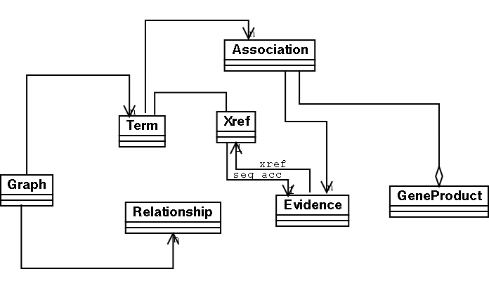

go-perl general documentation
go-perl has an event-streaming framework for parsing files. Parsers or Generators read input files and fire XML events. These events are intercepted by Handlers, which do something with the events, such as convert them into another format, or spit out a report.
This kind of framework has many advantages. It is more efficient, as it is not necessary to parse a whole file into memory before doing something with it.
Although it is possible to turn the events into objects conforming to the GO object model (below), it is not necessary to learn an object model in order to write your own handlers.
The framework can easily be used in a mixed programming language environment - for example, the events can be passed as an XML stream to an XSLT processor, or to a java program.
The structure of the nested events fired by the parsers correspond to XML. The structure of this XML can be shown as either DTD or stag-schema. See the go-dev/xml/dtd directory for descriptions of the events fired by the various parsers.
Note that all events generated by any file format corresponding to ontologies are subsets of obo parser events; see obo-parser-events.dtd dtd
A GO::Parser class reads in a file; it can be in various formats. The parser fires nested events. These are consumed by the handler; the handler may write out these events in an alternate format, or it may transform the events into some different xml.
[ reads file ] [ nested events]
FILE ----------------> GO::Parser -------------> GO::Handler
==== ========== ===========
.obo file obo_text_parser
.ontology file go_ont_parser
.defs file go_defs_parser
xref2go file go_xrefs_parser
gene_association file go_assoc_parser
The parsers fire off XML events using a limited simplified subset of XML which has no attributes and no mixed elements. I believe this has a number of advantages - the parsing and handling code is more concise, and the events can also be seen as Lisp-style S-Expressions or simple indented text (don't worry if you don't know what an S-Expression is)
go-perl uses the Data::Stag library for generating and consuming events; you can read more at stag.sourceforge.net
go-perl comes with the following parsers, all in the GO/Parsers directory.
Handlers intercept the stream of events generated by a parser. Typically they will either transform one XML event stream into another (transformation) or they will generate formatted text.
go-perl comes with the following handlers, all in the GO/Handlers directory
Most of these handlers come with a corresponding script; for example, you can test the GO::Handlers::pathlist parser by running go2pathlist on any GO or OBO formatted file.
Let's say you wish to parse a gene_association file, and produce a formatted report that looks something like this:
You're going to be intercepting a go-assoc event stream; you can get a rough idea of what this looks like by running the script go2xml on any of the gene_association files in the main GO repository.
<assocs>
<dbset>
<proddb>RGD</proddb>
<prod>
<prodacc>RGD:621326</prodacc>
<prodsymbol>Arl1</prodsymbol>
<prodname>ADP-ribosylationfactor-like1</prodname>
<prodtype>gene</prodtype>
<prodtaxa>10116</prodtaxa>
<assoc>
<assocdate>20040317</assocdate>
<source_db>RGD</source_db>
<termacc>GO:0005802</termacc>
<is_not>0</is_not>
<aspect>C</aspect>
<evidence>
<evcode>IDA</evcode>
<ref>RGD:724590</ref>
</evidence>
</assoc>
</prod>
<prod>
<prodacc>RGD:69327</prodacc>
<prodsymbol>Arl3</prodsymbol>
<prodname>ADP-ribosylation-like3</prodname>
<prodtype>gene</prodtype>
<prodtaxa>10116</prodtaxa>
<assoc>
<assocdate>20040317</assocdate>
<source_db>RGD</source_db>
<termacc>GO:0019003</termacc>
<is_not>0</is_not>
<aspect>F</aspect>
<evidence>
<evcode>IDA</evcode>
<ref>RGD:68742</ref>
</evidence>
</assoc>
<assoc>
...etc
Or you can look at the structure of the go-assoc event stream; see go_assoc-parser-events.dtd in the go-dev/xml/dtd directory. The same structure can be shown with the following stag-schema, below:
(assocs
(dbset+
(proddb "s")
(prod+
(prodacc "s")
(prodsymbol "s")
(prodtype "s")
(prodtaxa "i")
(assoc+
(assocdate "i")
(source_db "s")
(termacc "s")
(is_not "i")
(aspect "s")
(evidence+
(evcode "s")
(ref "s"))))))
We wish to catch <prod> events and write them out
package My::Handler;
use base (GO::Handlers::DefHandler);
sub e_prod {
my ($self, $prod) = @_;
printf "Gene Product: %s %s\n",
$prod->get_acc, $prod->get_symbol;
my @assocs = $prod->get_assoc;
foreach my $assoc (@assocs) {
printf " To Term: %s\n", $assoc->get_termacc;
}
}
1;
The get_* methods are automatically provided by the Data::Stag modules. See Data::Stag documentation, on CPAN.
You can then see the output of your handler using the go2fmt.pl script:
go2fmt.pl -w My::Handler gene_associations.sgd
You can also use your module in code like this:
use GO::Parser;
# create a parser object that passes things to an object handler
my $parser = GO::Parser->new({handler=>"My::Handler"});
# the parser will go through the file firing events
# which will be intercepted by My::Handler
$parser->parse($file);
exit 0;
Sometimes we find it necessary to do things such as graph traversal on the ontology; this is where the object model comes in handy.
Before reading on, you should make sure you are reasonably familiar with the slightly abstruse perl object system. You should also be familiar with commands like "perldoc" so you can get more information on any class in the object model.
Here's a diagram showing the overall structure of the go-perl object model: 
Note that unless you're using the go-db-perl, then you probably don't have any need for many of the classes, such as Association, GeneProduct and Seq
The 3 core classes are Term, Relationship and Graph. A Term is used to represent a GO or OBO Term/Class, and holds data such as the identifier, the name, definition, synonyms and so forth.
Perhaps the most useful class in the object model is the GO::Model::Graph class - this holds a collection of Terms and knows the Relationships between them. Note that the Term objects themselves are quite dumb - they have no idea what their context is in the overall DAG/Ontology. You have to use the Graph object to discover this sort of thing.
The Graph class has various methods for doing graph traversal and querying - see the pod docs for full details
use GO::Parser;
# create a parser object that passes things to an object handler
my $parser = GO::Parser->new({handler=>'obj'});
# the parser will go through the file firing events - the
# object handler will catch those events and store them
# in a GO::Model::Graph object
$parser->parse($file);
my $graph = $parser->handler->graph;
go-database@fruitfly.org